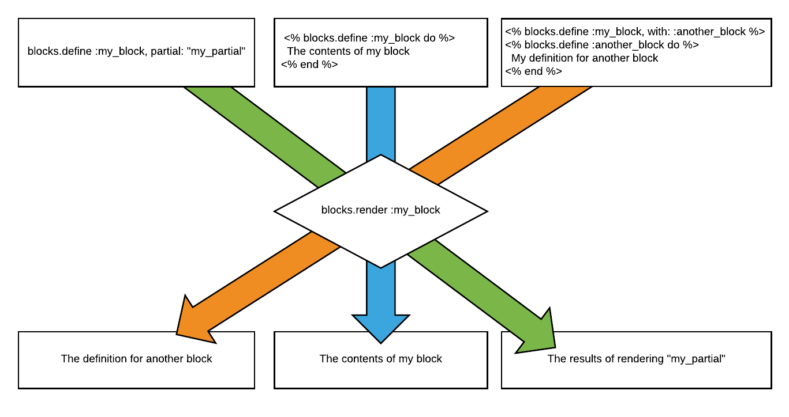

Introduction
The Blocks gem is many things.
It acts as:
- a container for reusable blocks of code and options
- a common interface for rendering code, whether the code was defined previously in Ruby blocks, Rails partials, or proxies to other blocks of code
- a series of hooks and wrappers that can be utilized to render code before, after, and around other blocks of code, as well as before each, after each, and around each item in a collection
- a templating utility for easily building reusable and highly customizable UI components
- a means for DRYing up oft-repeated code in your layouts and views
- a simple mechanism for changing or skipping the rendering behavior for particular blocks of code
Essentially, this all boils down to the following: Blocks makes it easy to define blocks of code that can be rendered either verbatim or with replacements and modifications at some later point in time.
3 Rendering Strategies - 1 Call
With Blocks, you can define a Block of code for later rendering using 3 different strategies. Rendering that Block of code is done with the same call for each strategy.

Strategy 1 - Defining with a Ruby Block
A Block may be defined as a standard Ruby block (which may be a Ruby Block, Proc, or Lambda):
<% blocks.define :my_block do %>
The content of my block
<% end %>
Strategy 2 - Defining with a Rails Partial
A Block may be defined as a Rails partial; whenever the Block gets rendered, the partial actually gets rendered.
<%= blocks.define :my_block, partial: "my_partial" %>
Strategy 3 - Defining with a Proxy to Another Block
A Block may be defined as a proxy to another block using the with keyword in the parameters.
<% blocks.define :my_block, with: :some_proxy_block %>
Proxy Blocks can also be chained together though separate definitions. The order of Block definitions is irrelevant, so long as they all occur before the Block is rendered.
<% blocks.define :my_block, with: :some_proxy_block %>
<% blocks.define :some_proxy_block, with: :some_other_proxy_block %>
<% blocks.define :some_other_proxy_block do %>
My proxied proxied content
<% end %>
Likewise, the Block that another Block proxies to can be defined in any of the three ways that Blocks are defined:
<% blocks.define :my_block, with: :some_proxy_block %>
<!-------------- AS A BLOCK ------------------->
<% blocks.define :some_proxy_block do %>
My proxy block definition
<% end %>
<!----------- OR AS A PARTIAL ----------------->
<% blocks.define :some_other_proxy_block, partial: "some_partial" %>
<!------- OR AS ANOTHER PROXY ----------------->
<% blocks.define :some_other_proxy_block, with: :yet_some_other_proxy_block %>
Also, a Proxy block can point to a method on the builder instance (by default, this is an instance of Blocks::Builder).
1 Render Call
Whether you define the Block using a Ruby block, Rails Partial, or a Proxy to another Block, the method of rendering that block of code is the same:
<%= blocks.render :my_block %>
This Looks Familiar
If you think this looks somewhat familiar, there’s good reason for that. Any similarities you may notice with Rails’s content_for with yield and rendering partials in Rails are intentional (the proxying feature may even remind you of Ruby’s Forwardable Module). Part of the original reasoning for the creating this gem was to provide a common interface for rendering both Ruby blocks and Rails’ partials.
Example of same code written with Blocks vs. Rails’ content_for with yield:
<% blocks.define :my_content do %>
My content to be rendered later
<% end %>
<%= blocks.render :my_content %>
<% content_for :my_content do %>
My content to be rendered later
<% end %>
<%= yield :my_content %>
Example of same code written with Blocks vs. Rails’ render partial:
<% blocks.define :my_content, partial: "my_partial" %>
<%= blocks.render :my_content %>
<%= render partial: "my_partial" %>
If the Blocks Gem ended there, it might even prove useful to a few people out there, but as we’ll soon see, Blocks goes way beyond these enhancements.
This Looks Different
Indifferent Access
Let’s jump right in with a relatively minor but important difference. The Blocks gem does not care whether the name of your Block is a String or a Symbol; it treats both as the same. So whereas using content_for with yield will require that the name matches identically, Blocks will handle the mismatch of Symbols and Strings:
<% blocks.define :my_content, partial: "my_partial" %>
<%= blocks.render "my_content" %>
=> Will output the contents of my_partial
<% content_for :my_content do %>
My content
<% end %>
<%= yield "my_content" %>
=> Won't produce output
<% blocks.define "my_other_content" do %>
My other content
<% end %>
<%= blocks.render :my_other_content %>
=> Will output "My other content"
<% content_for "my_other_content" do %>
My content
<% end %>
<%= yield :my_other_content" %>
=> Won't produce output
3 WAYS TO RENDER WITH A DEFAULT DEFINITION
If a block is rendered without a definition, it doesn’t output anything, but it doesn’t fail either:
<%= blocks.render :block_without_a_definition %>
This, in itself, is no different than running:
<%= yield :some_content_name_not_defined %>
Rails would handle this in exactly the same way, and in both examples, nothing was rendered, because a definition for the “block_without_a_definition” Block was never defined, just as content_for was never run to define “some_content_name_not_defined”.
But with Blocks, we can actually specify what to render when no corresponding definition was made, and we can do this in the exact same three ways that Blocks are defined:
We can render with a default Ruby block to use:
<%= blocks.render :my_block_without_a_definition do %>
This is my default definition for this Block
<% end %>
We can render with a default partial to use:
<%= blocks.render :my_block_without_a_definition, partial: "partial_to_render" %>
We can render with a default proxy to another Block to use:
<%= blocks.render :my_block_without_a_definition, with: :another_block %>
PASSING PARAMETERS
Moving on to another key difference, Blocks may be defined with params, and params may be passed to Blocks when they are rendered:
<% blocks.define :my_block do |param1, param2, options| %>
Hello <%= param1 %>. My second param is <%= param2 %> and my options are <%= options.inspect %>
<% end %>
<%= blocks.render :my_block, "World", "param2", a: 1, b: 2, c: 3 %>
=> Outputs Hello World. My second param is param2 and my options are {"a"=>1, "b"=>2, "c"=>3}
The number of parameters do not need to match up between the define and render call, so the defined block may take no arguments or more arguments than the render call passes.
There is a second way of passing parameters to a Block - on the define call itself:
<% blocks.define :my_block, a: 1, b: 2, c: 3 do |options| %>
My options are <%= options.inspect %>
<% end %>
<%= blocks.render :my_block %>
=> My options are {"a"=>1, "b"=>2, "c"=>3}
Any parameters that have matching names between the define and the render calls will give precedence to the render parameters:
<% blocks.define :my_block, a: 1, b: 2, c: 3 do |options| %>
My options are <%= options.inspect %>
<% end %>
<%= blocks.render :my_block, a: 4, c: 6 %>
=> My options are {"a"=>4, "c"=>6, "b"=>2}
RENDERING A COLLECTION
Rendering a partial in Rails allows the developer to specify a collection, which will render the partial for each item in the collection. Likewise, Blocks has near-identical syntax for rendering a collection:
<% blocks.define :my_block do |item| %>
Item: <%= item %>
<% end %>
<%= blocks.render :my_block, collection: [1, 2, 3, 4] %>
=> Item: 1 Item: 2 Item: 3 Item: 4
The collection may also be set when the Block is defined:
<% blocks.define :my_block, collection: [1, 2, 3, 4] do |item| %>
Item: <%= item %>
<% end %>
<%= blocks.render :my_block %>
=> Item: 1 Item: 2 Item: 3 Item: 4
Additionally, you can set the “as” option which will affect the variable name of the item in the collection within the rendered partial:
<% blocks.define :my_block, collection: [1, 2, 3, 4], as: :item, partial: "my_partial"
<%= blocks.render :my_block %>
=> Will render each _my_partial for each item in the collection. _my_partial will have item set to the item of the collection.
HOOK IT, WRAP IT
In Rails, when you make multiple content_for calls with the same block name, and then yield to that block name, it outputs the concatenated content of the content_for blocks in the order in which they were defined:
<% content_for :hello do %>
Hello 1,
<% end %>
<% content_for :hello do %>
Hello 2,
<% end %>
<% content_for :hello do %>
Hello 3
<% end %>
<%= yield :hello %>
<!-- Outputs Hello 1, Hello 2, Hello 3 -->
Blocks takes this concept one step further by giving the programmer an enormous degree of freedom in determining where and how content is rendered. It does so by providing a series of hooks and wrappers that render additional code in relation to the Block being rendered.
This gives the programmer the ability to define content that is prepended, appended, surrounding, before, after, around, before_all, and after_all the results of rendering the actual Block. When a collection is involved, there is also before_each, after_each, and around_each. This functionality is achieved through the use of Hooks.
Here’s the above code translated into Blocks syntax:
<% blocks.append :hello do %>
Hello 1,
<% end %>
<% blocks.append :hello do %>
Hello 2,
<% end %>
<% blocks.append :hello do %>
Hello 3
<% end %>
<%= blocks.render :hello %>
<!-- Outputs Hello 1, Hello 2, Hello 3 -->
While Rails will render multiple content_for calls with the same name in order, Blocks gives the programmer the ability to define relative content to be prepended, appended, surrounding, before, after, around, before_all, after_all while rendering the content block. When a collection is involved, there is also before_each, after_each, and around_each. This functionality is achieved through the use of Hooks.
There are three different types of hooks, and three levels for each of the types of hooks (making a total of nine different hooks). The three types are: before, after, and around hooks. They may exist at three different levels: in relation to all rendered content, in relation to a single item in a collection being rendered, and in relation to the actual content of the Block being rendered. The levels will become more clear as we proceed.
Hooks work similar to the way that Rails does ActionController filters; before hooks render code before the Block, after hooks render code after the Block, and around hooks render code around the Block. The level of the hook determines exactly where the code gets rendered in relation to the Block.
Multiple hooks may be defined of the same type. If they are append, after, or after_all hooks, the order in which they are rendered is the same as the order in which they are defined.
All other hooks will render in reverse order. The idea behind this is that if I define a before hook, and then define another before hook, the second before hook actually renders before the first before hook. It’s like saying, “before some code, render this, and before that, render this”. Likewise, defining an around hook will render around something, a second around hook will render around the first around hook, etc.
Like defining a Block, hooks can be defined as Ruby blocks, Rails partials, or Proxies. Multiple different hooks may be defined for the same Block.
<% blocks.prepend :my_block do %>
Prepended content
<% end %>
<% blocks.before :my_block, partial: "some_partial" %>
<% blocks.after :my_block, with: :some_proxy_block %>
BEFORE HOOKS
The complete list of Hooks and Wrappers is as follows:
Hook Name Where content Renders Render order Allows multiples? before_all Renders before all other content, hooks, and wrappers Reverse order Yes around_all Renders code around all other hooks and wrappers with the exception of the before_all and after_all hooks Reverse order Yes wrap_all Renders code around all other content with the exception of before_all, after_all, and around_all hooks N/A No wrap_each Renders around each item in a collection (the absence of a collection will treat the rendering as a collection with a single item) N/A No around Renders code around the combination of the before hooks, the wrapper, the surround hooks, the prepend hooks, the Block content, the append hooks, and the after hooks Reverse order Yes before Renders code immediately before the combination of the wrapper content, the surround hooks, the prepend hooks, the Block content, and the append hooks Reverse order Yes wrapper Renders code around the combination of the surround hooks, the prepend hooks, the Block content, and the append hooks N/A No surround Renders code around the combination of the prepend hooks, the Block content, and the append Hooks. Reverse order Yes prepend Renders code immediately prior to the Block content itself Reverse order Yes append Renders code immediately after the Block content itself In order Yes after Renders code immediately after the combination of the wrapper content, the surround hooks, the prepend hooks, the Block content, and the append hooks In order Yes after_all Renders code after all other content, hooks, and wrappers In order Yes Graphically, this will look something like this (without a collection):
blockrendering-blockrenderingor with a collection:
blockrendering-collectionrendering
EXAMPLES
<% blocks.append :my_block do %>
Append 1;
<% end %>
<% blocks.append :my_block do %>
Append 2;
<% end %>
<% blocks.append :my_block do %>
Append 3
<% end %>
<%= blocks.render :my_block do %>
Content
<% end %>
<!-- Outputs Content Append 1; Append 2; Append 3 -->
<% blocks.prepend :my_block do %>
Prepend 1;
<% end %>
<% blocks.prepend :my_block do %>
Prepend 2;
<% end %>
<% blocks.prepend :my_block do %>
Prepend 3;
<% end %>
<%= blocks.render :my_block do %>
Content
<% end %>
<!-- Outputs Prepend 3; Prepend 2; Prepend 1; Content -->
<% blocks.around :my_block do |content_block| %>
First around call<br>
<%= content_block.call %>
End of first around call<br>
<% end %>
<% blocks.around :my_block do |content_block| %>
Second around call<br>
<%= content_block.call %>
End of second around call<br>
<% end %>
<% blocks.around :my_block do |content_block| %>
Third around call<br>
<%= content_block.call %>
End of third around call<br>
<% end %>
<%= blocks.render :my_block do %>
Content<br>
<% end %>
<!-- Outputs:
Third around call
Second around call
First around call
Content
End of first around call
End of second around call
End of third around call
-->
WRAPPERS
Wrappers work almost identically to around hooks with the exception that there may be multiple hooks of the same type but only a single wrapper of a particular type. There are three types of wrappers, one for each of the levels mentioned above.
Wrappers are like Hooks but they are singular; i.e. only a single wrapper of a given type may exist for a Block. There are three different wrapper types: wrap_all, wrap_each, and wrapper.
SKIP IT
TODO
MERGING OPTIONS
TODO
3 LEVELS OF OPTIONS
TODO
TEMPLATING
TODO